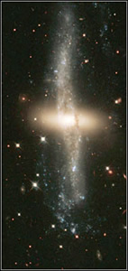

Astronomers tend to classify extended astronomical objects based on their structural properties or morphology. For example, when determining the Hubble type of a galaxy, astronomers consider important morphological features such as disks, bars, spiral arms and bulges before assigning a classification.
However, some galaxies show deviations from the smooth bulge profiles and flat, uniform disks that are expected under the Hubble classification scheme. These galaxies are said to exhibit ‘morphological peculiarities’ which may include tidal tails, shells, warps and aymmetries. If the peculiarities are large, the Hubble type of the galaxy is generally followed by the suffix ‘pec’ (short for peculiar).
Morphological peculiarities are usually the result of an interaction between galaxies, such as a fly-by or a merger. However, peculiarities may also arise due to secular processes within galaxies, such as the action of bars.
|

NGC4560A exhibits a polar disk.
Credit: Hubble Heritage Team (AURA/STScI/NASA) |
|
| Two distinctly peculiar galaxies: the morphologies of these galaxies have suffered catastrophic alteration by interactions or mergers with neighbouring galaxies. | |